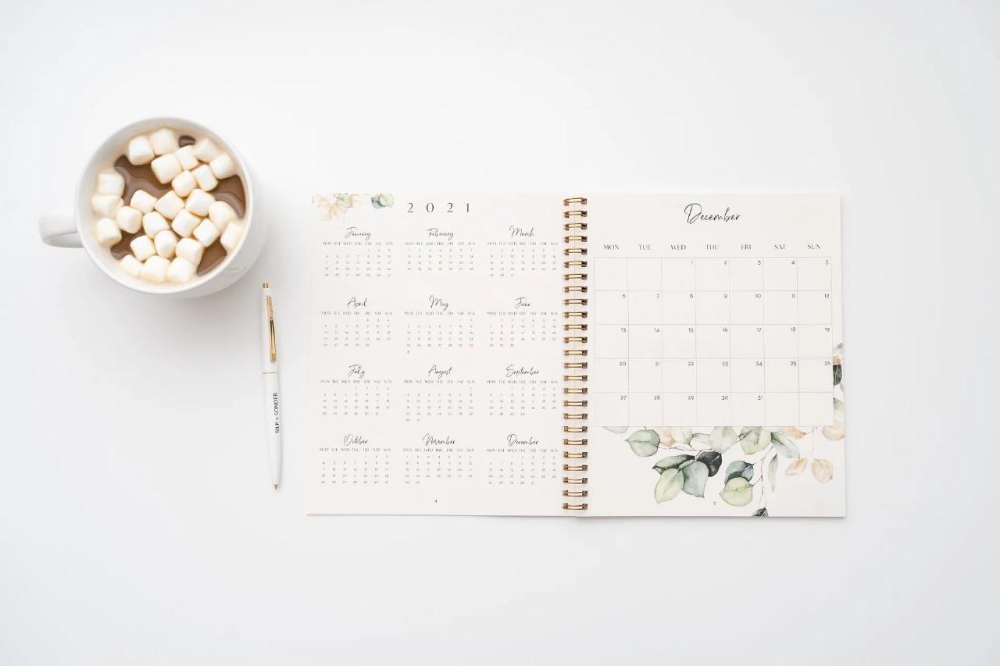

Year in Pixels, where every day is a canvas of emotions painted in vibrant hues. We believe in the power of expression, and our project captures the essence of each day through the colors of mood. Whether it's a splash of joy, a brushstroke of tranquility, or a swirl of introspection, our platform transforms daily experiences into a captivating visual narrative. Here, we celebrate the uniqueness of human emotions and the diverse spectrum they create. Through our innovative approach, we invite you to explore the intricate tapestry of feelings that shape our lives. Join us on this colorful journey as we blend art and emotion to reflect the kaleidoscope of human experience. Discover the beauty in the everyday, find connection through shared emotions, and let your mood paint the canvas of time with us at Year in Pixels.
365 Days in Pixels: Capturing Life's Spectrum
"A Visual Journey Through Every Emotion, Moment, and Memory".
